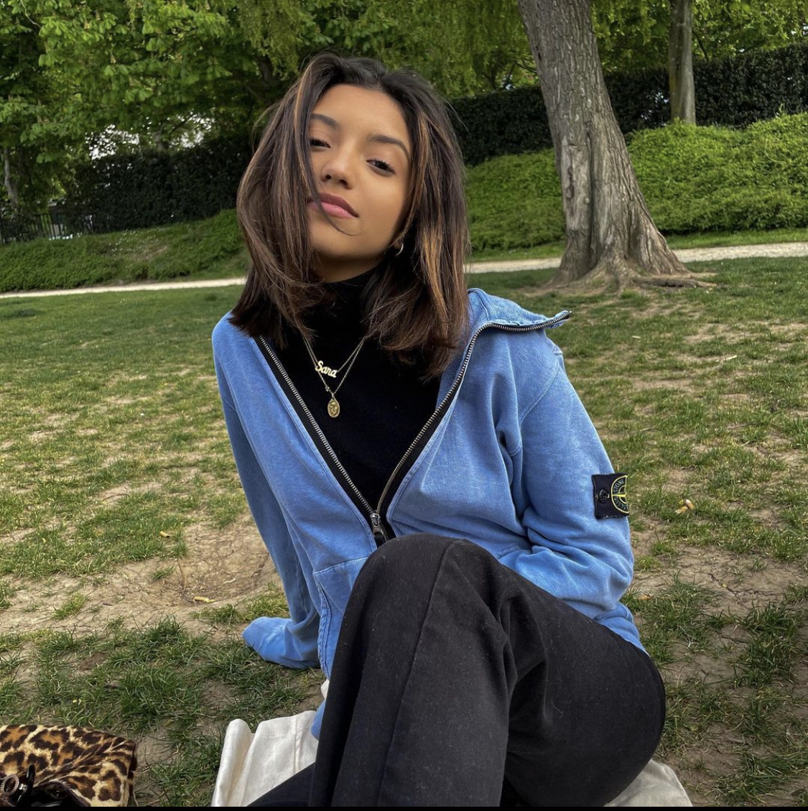

Salut! Je m'appelle Nikita mais tout le monde m'appelle Niki. J'ai 18 ans et vous êtes actuellement sur mon premier projet de codage dans lequel je vais vous parler de MOI !
Je suis étudiante à l'EMLV, c'est l'une des 3 écoles faisant partie du pôle Universitaire Léonard de Vinci. Le pôle se situe dans le quartier d'affaires de La Défense, aux portes de Paris. J'y suis le Programme Grandes Ecoles dans l'optique d'obtenir un master en business international et travailler dans le domaine de la mode. L'EMLV axe principalement sa pédagogie sur les technologies, l'échange internationnal ainsi que le developpement des softskills.
Depuis petite, j'ai toujours trouvé que la musique était un parfait refuge. J'ai d'abord connu la musique à travers les références de mon père qui allaient de Bowie à Berger. Tout en continuant d'apprecier les virtuoses qu'il m'a fait découvrir, je me suis constitué une bibliothèque musicale allant cette fois - ci de mozart à biggie.
Voyager est pour moi essentiel car cela permet d'éclaicir notre regard sur le monde qui nous entoure et se détacher de la vision peut - être préconçue que l'on se fait de l'humain en général et du monde.